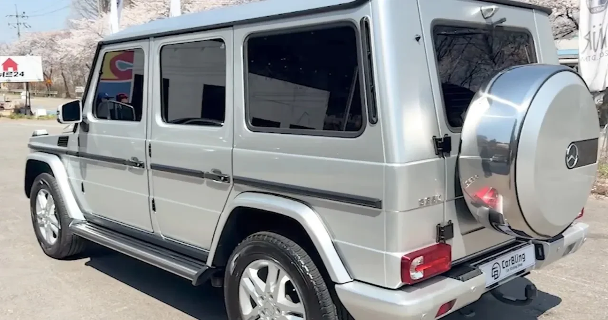
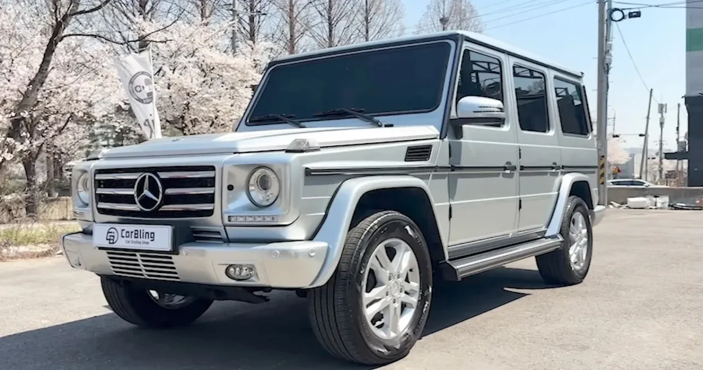

▲ 김종국이 2014년식으로 구입해 12년째 타고 있는 벤츠 G350 블루텍. 최근 래핑과 디테일링을 새로 마쳤다 ⓒ 뉴스와
1. 근황 — 12년 된 차를 다시 손봤다
방송인 김종국이 12년째 타고 있는 벤츠 G바겐을 최근 다시 손봤다는 근황이 전해졌다. 래핑과 실내외 디테일링, 휠 복원 작업까지 마쳤다는 소식이다. 새 차로 바꾸는 대신 오래 탄 차를 다시 정비해서 타는 쪽을 택한 셈이다.
차량은 2014년식 메르세데스-벤츠 G350 블루텍. 이른바 'G바겐'으로 불리는 모델 중에서도 고성능 AMG 라인이 아닌 디젤 엔트리 트림이다.
▲ 직접 운전대를 잡은 김종국. 12년째 이 차를 손수 몰고 다닌다 ⓒ 뉴스와
2. 이 차의 정체 — 544마력 대신 211마력을 골랐다
G바겐 라인에는 6기통 디젤부터 8기통 AMG까지 다양한 트림이 있는데, 김종국이 고른 건 가장 소박한 축에 속하는 G350 블루텍이다. OM642 3.0L V6 터보디젤 엔진을 얹어 최고출력 211마력, 최대토크 55.1kg·m를 낸다. 같은 차체를 쓰는 AMG G63(544마력)과 비교하면 출력 차이가 두 배 이상이다.
"제 차는 지바겐 2014년형입니다. 개인적인 감성으로는 지바겐 구형을 너무 좋아합니다. 예전에 각그랜저 같은 느낌이랄까요."— 김종국
각진 차체와 아날로그에 가까운 기계적 조작감이 마음에 든다는 게 그가 밝힌 이유다. 신형으로 갈수록 부드러워지는 최신 SUV들과 달리, 구형 G바겐 특유의 투박한 감각을 일부러 유지하고 있는 셈이다.

▲ 후면부. 뒷문에 그대로 달린 스페어타이어는 구형 G바겐의 상징 같은 디자인이다 ⓒ 뉴스와
3. 신차가 1억 4,630만 원, 지금은 7,000만 원
구매 당시 이 차의 신차 가격은 1억 4,630만 원이었다. 자동차 업계 관계자들은 현재 중고 시세를 약 7,000만 원 선으로 본다. 12년을 탔는데도 신차가의 절반에 조금 못 미치는 수준을 유지하고 있는 셈이다.
| 구분 | 금액 | 비고 |
|---|---|---|
| 신차 가격(2014년 구매 당시) | 1억 4,630만 원 | 디젤 엔트리 트림 |
| 현재 중고 시세 | 약 7,000만 원 | 업계 추정치, 12년 경과 |
G바겐이 다른 수입 SUV보다 감가상각이 느린 차종으로 꼽힌다는 점을 감안해도, 12년 동안 절반 정도의 가치를 유지했다는 건 이 차종의 희소성과 꾸준한 수요를 보여주는 수치이기도 하다.
4. 신혼집은 현금 62억, 차는 12년 된 중고
김종국은 자산가로 알려진 방송인이다. 서울 강남구 논현동의 고급 빌라를 대출 없이 현금 62억 원에 매입했다는 사실이 알려지기도 했다. 전용면적 243㎡ 규모로, 소수 가구만 사는 프라이빗한 단지다.
📍 선택적으로 쓰는 소비 패턴
집은 대출 없이 현금으로, 그것도 강남 고급 빌라를 매입했지만 차는 12년째 같은 모델을 유지하고 있다. 흥미로운 건 본인 차와 별개로 아내에게는 롤스로이스를 선물하겠다는 뜻을 밝혔다는 점이다. 자신에게 쓰는 돈과 가족에게 쓰는 돈의 기준이 뚜렷하게 갈리는 소비 성향으로 읽힌다.

▲ 측면에서 본 모습. 12년째 큰 사고나 교체 없이 유지되고 있다 ⓒ 뉴스와
5. 왜 자꾸 화제가 될까
연예계에서는 신차를 자주 바꾸는 소비가 흔한 편이다. 그런 분위기 속에서 자산 규모와 무관하게 한 차를 12년씩 타는 사례는 그 자체로 눈에 띌 수밖에 없다. 여기에 '짠돌이'라는 기존 이미지와 62억 원짜리 현금 매입이라는 상반된 정보가 함께 알려지면서, 그의 소비 습관은 반복해서 화제에 오르고 있다.
✅ 체크포인트
· 중고 시세 7,000만 원은 업계 관계자 추정치로, 실제 거래가와는 차이가 있을 수 있다
· 아내에게 롤스로이스를 선물하겠다는 발언은 실제 구매로 이어졌는지 확인되지 않았다
· 이 차는 개인 소유 차량으로, 방송·행사용 차량과는 별개다
6. 정리
김종국은 신차 가격 1억 4,630만 원짜리 벤츠 G350 블루텍을 12년째 몰고 있으며, 최근 래핑과 디테일링으로 다시 손을 봤다. 현재 중고 시세는 약 7,000만 원으로 추정된다. 강남 빌라를 현금 62억 원에 매입할 만큼 자산이 있지만 정작 자신의 차는 오래된 엔트리 트림을 고수하고 있고, 아내에게는 롤스로이스를 약속했다는 점이 이 소비 패턴을 더 흥미롭게 만든다.